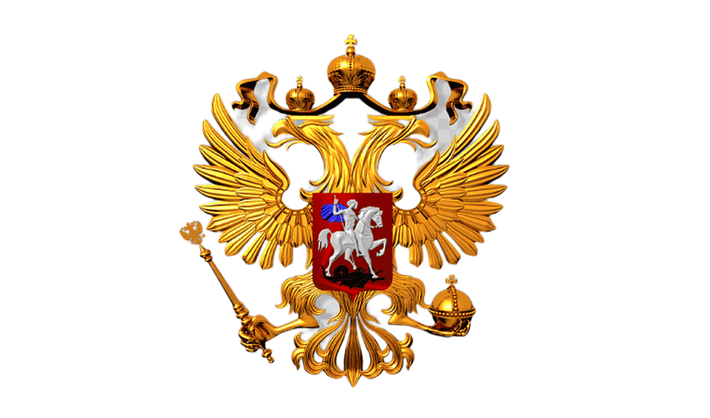

Это учебный инструмент для ориентации студентов направления «Государственное и муниципальное управление» в системе федеральных органов исполнительной власти Российской Федерации.
Тест измеряет выраженность шести параметров (шкал) вашего профессионального профиля:
P – правоприменение и контроль/надзор
S – социально-гуманитарная направленность
E – экономико-финансовая и рыночная направленность
I – международная и внешнеполитическая ориентированность
D – цифровизация, данные, ИКТ
T – территориальная распределённость и «полевой» характер работы
Используется шкала Лайкерта: 1 – совершенно не согласен(на), 2 – скорее не согласен(на), 3 – и да, и нет / затрудняюсь, 4 – скорее согласен(на), 5 – полностью согласен(на).